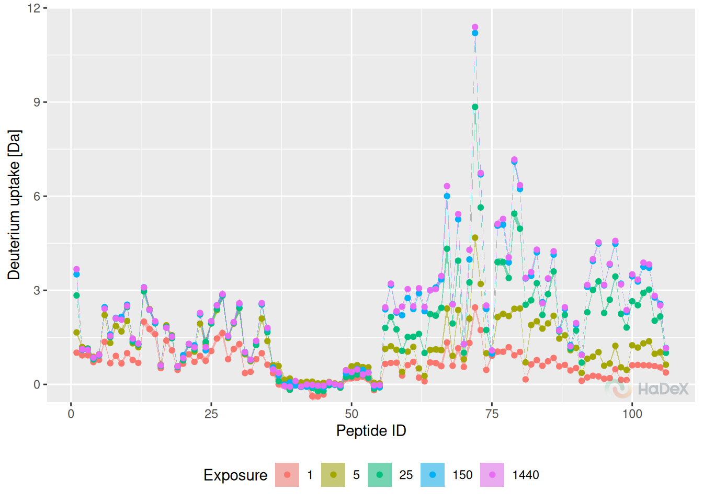
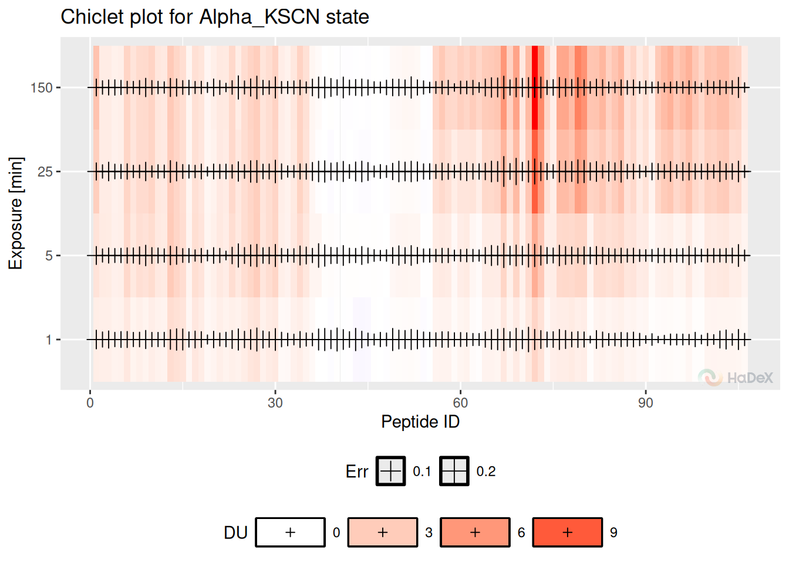
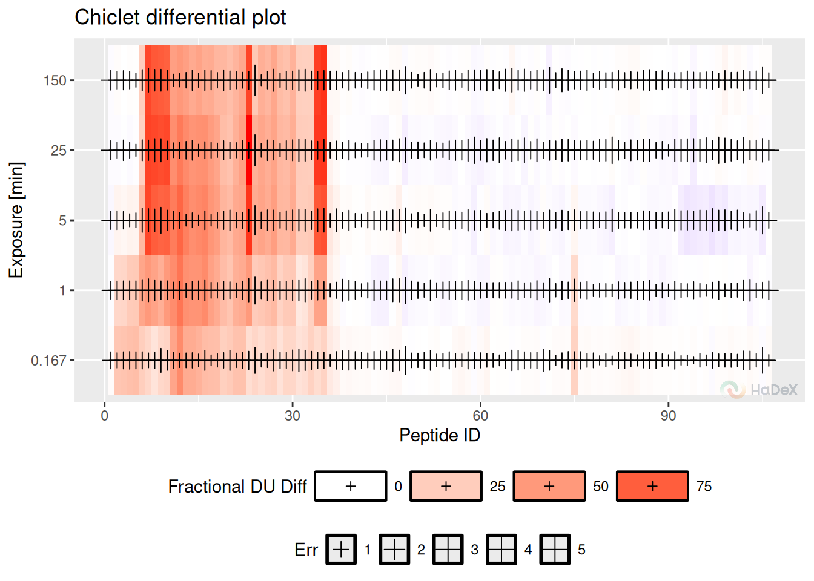
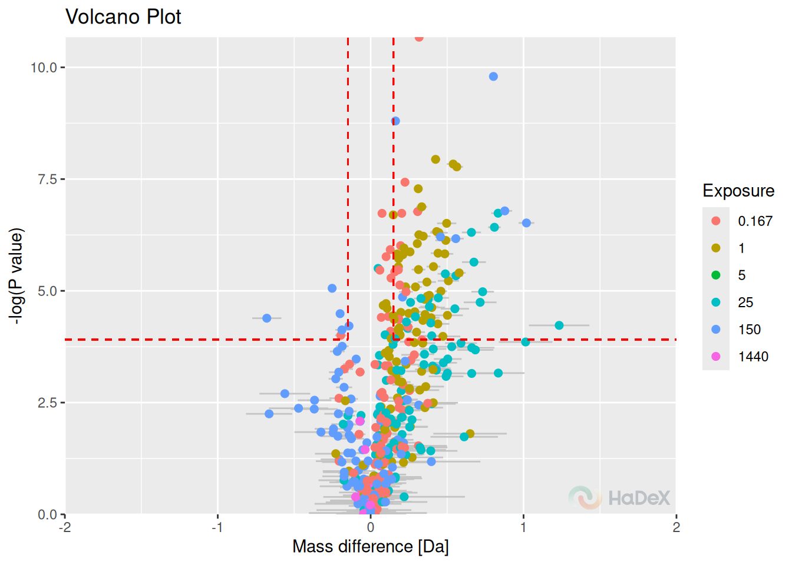
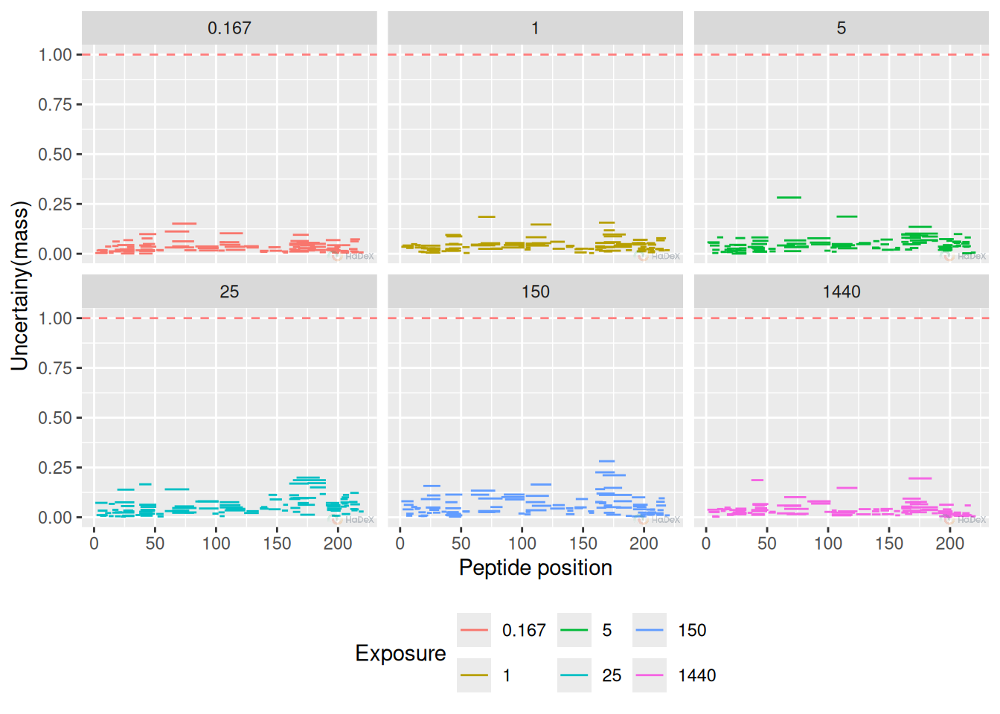
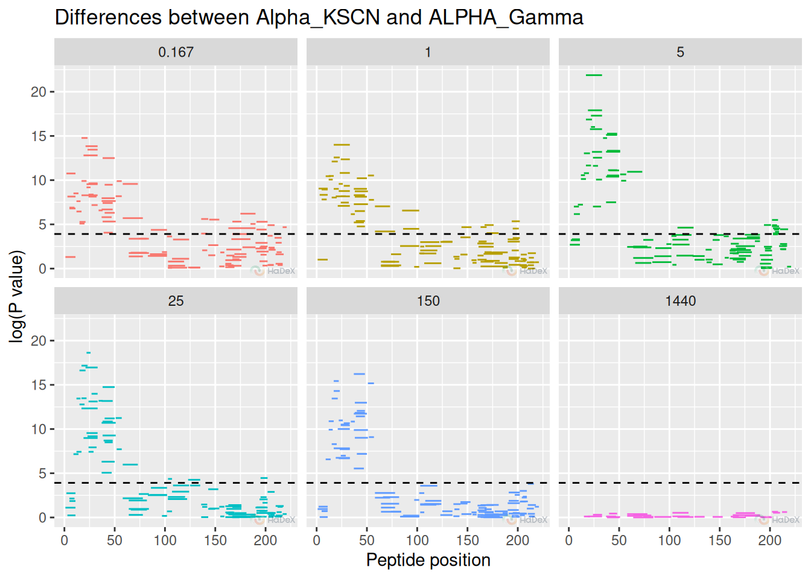
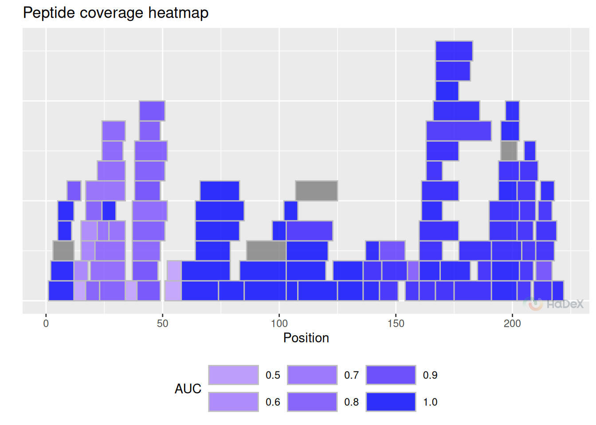

Data visualization
visualization.RmdData visualization is a crutial part of the experimental data analysis. The forms of visualization should be adjusted to highlight the essential result and tailored to satisfy personal needs.
In this article, we present methods of data visualization available in the HaDeX2 package, and consecutively in the GUI.
The analyzed protein is the eEF1Bα subunit of the human guanine-nucleotide exchange factor (GEF) complex (eEF1B), measured in Mass Spectrometry Lab in Institute of Biochemistry and Biophysics Polish Academy of Sciences and published by Bondarchuk et al. In the one-state classification, we will focus on pure alpha state - eEF1B. The comparative analysis is conducted between eEF1B and eEF1B in presence of eEF1B.
Comparison plot
The comparison plot presents deuterium uptake of the peptides in a given time point, with information on the length of the peptide and their position in the protein sequence. It allows comparison of the results of different biological states.
Example In the comparison plot below, we see the fractional deuterium uptake for all three possible states: eEF1B, eEF1B in presence of eEF1B and in presence of eEF1B, from protein eEF1B. The values are calculated for the time point 1 min. The length of the segments represents the length of the peptide and the position in the protein sequence. The error bars indicate the uncertainty of the measurement.

Pros:
- peptide length and position
- comparison of multiple biological states
- region with difference is easy to spot on
- uncertainty for each peptide
Plot variants:
- fractional/absolute values
- fractional values calculated with respect of theoretical/experimental maximal uptake
- plots with different time points can be plotted next to each other
- tooltips available in GUI
Woods plot
Woods plot presents the deuterium uptake difference between two biological states for the peptides. The results are presented with respect to the length of the peptide and its position in the protein sequence for a given time point of the measurement. The statistical test (Houde et al., the confidence level is calculated based on the measurements in chosen time point of the measurement) is applied to determine the confidence limits values at the chosen level.
Example On the Woods plot below, we see fractional deuterium uptake difference between two biological states eEF1B and eEF1B in presence of eEF1B for protein eEF1B The confidence limits indicate which differences are statistically significant at levels 98%.

Pros
- differential analysis between two states
- peptide length and position
- region with difference is easy to spot on
- uncertainty for each peptide
- hybrid statistical testing
- statistical level
Plot variables:
- fractional/absolute values
- fractional values calculated with respect of theoretical/experimental maximal uptake
- plots with different time points can be plotted next to each other
- peptides classified as statistically unsignificant can be hidden
- tooltips available in GUI
Butterfly plot
Butterfly plot presents the deuterium uptake for all peptides in a given state at different time points at once. Each time point of measurement is indicated by a different color. Peptides are identified by their ID (peptides are numbered arranged by the start position).
Example Below, on the butterfly plot, we see how the deuterium uptake changes in time for state eEF1B for protein eEF1B. We see the different exchange speed - for some peptides, the change is stable in time, and for some peptides, there is no visible change in time.

Pros
- values for time course
- uncertainty for each peptide
Cons:
- only one state
- lost information of length and position of the peptide
- may be difficult to read
Plot variants:
- fractional/absolute values
- fractional values calculated with respect of theoretical/experimental maximal uptake
- different methods of showing uncertainty: bars or ribbons
- selected time points shown
- tooltips available in GUI
Butterfly differential plot
Butterfly differential plot shows the deuterium uptake difference between two biological states in the form of a butterfly plot. It shows the results for a peptide ID (peptides are numbered arranged by the start position). The results are shown for different time points at once (time points of measurement are indicated by the color).
Example Below, we see how the fractional deuterium uptake difference between states eEF1B and eEF1B in presence of eEF1B changes over time. We see that for some peptides, the difference is smaller with time - perhaps because of the back exchange.
The measurements for 1440 min are hidden, as they are close to 0, as expected.

Pros
- differential analysis between two states
- hybrid statistical testing
- statistical significance level
- values for time course
- uncertainty for each peptide
Cons:
- lost information of length and position of the peptide
- may be difficult to read
Plot variants:
- fractional/absolute values
- fractional values calculated with respect of theoretical/experimental maximal uptake
- different methods of showing uncertainty: bars or ribbons
- selected time points shown
- tooltips available in GUI
Chiclet plot
Chiclet plot shows the fractional deuterium uptake in the form of a heatmap for the peptides in a given biological state. One tile indicates the peptide (identified by its ID - number arranged by the start position) in a time point of measurement. The color of the tile indicates the fractinal deuterium uptake (according to the legend below the plot).
Example In the chiclet plot below, we can see the deuterium uptake values for peptides (indicated by their ID) in state eEF1B during the time course of the experiment. The cross symbols indicate the uncertainty of the measurement (the bigger the cross sign, the bigger the uncertainty).
Pros
- values for time course
- uncertainty for each peptide
Cons:
- only one state
- lost information of length and position of the peptide
- may be difficult to read
- small changes in values may be difficult to spot
Plot variants:
- fractional/absolute values
- fractional values calculated with respect of theoretical/experimental maximal uptake
- uncertainty can be hidden to improve the readability of the plot
- peptides classified as statistically significant can be hidden
- selected time points shown
- tooltips available in GUI
Chiclet differential plot
Chiclet differential plot shows the deuterium uptake difference between two biological states in the form of a heatmap. One tile indicates the peptide (identified by its ID - number arranged by the start position) in a time point of measurement. The color of the tile indicates the deuterium uptake difference (according to the legend below the plot).
Example On the chiclet differential plot below, we see the fractional deuterium uptake difference between states eEF1B and eEF1B in presence of eEF1B for protein eEF1B. We see that some peptides are protected (red), and some are deprotected (blue). The cross symbols indicate the uncertainty of the measurement (the bigger the cross sign, the bigger the uncertainty).
Pros
- differential analysis between two states
- values for time course
- uncertainty for each peptide
Cons:
- lost information of length and position of the peptide
- may be difficult to read
- small changes in values may be difficult to spot
Plot variants:
- fractional/absolute values
- fractional values calculated with respect of theoretical/experimental maximal uptake
- uncertainty can be hidden to improve the readability of the plot
- peptides classified as statistically significant can be hidden
- selected time points shown
- tooltips available in GUI
Volcano plot
The volcano plot shows the deuterium uptake difference for two biological states for peptide and its p-value for double testing on statistical significance (Weis et al.). On the x-axis, there is a deuterium uptake difference with its uncertainty (combined and propagated). On the y-axis, there is a P-value calculated for each peptide in a specifc time point of a measurement as a un-paired t-test on given significance level (on mass measurement from the replicates to indicate if the measured mean is significantly different between two states, as the deuterium uptake difference between states can be rewritten as
for states A and B. The values of deuterium uptake difference from all time points are shown on the plot.
The dotted red lines indicate confidence limits for the values. The horizontal line indicates the confidence limit based on chosen confidence level to give a threshold on a P-value. The vertical lines indicate the confidence limit from Houde test for all time points and indicate a threshold on deuterium uptake difference. The statistically significant points are in the top left and right corners of the plot.
Example On the volcano plot below, we see the results for deuterium uptake difference between states eEF1B and eEF1B in presence of eEF1B for protein eEF1B in all time points. The points in the left and right upper corner are statistically significant using the hybrid testing.

Pros
- hybrid statistic test
- time course information
- uncertainty
Cons
- length and position lost
Plot variations:
- selected time points
- absolute/fractional values s
- hidden unsignificant values
- tooltips available in GUI
Uptake curve
Uptake curves show the changes in exchange in time for a specific peptide for its state.
Example On the uptake curve below, we see how the exchange goes for peptide GFGDLKSPAGL in all three states for protein eEF1Ba.

Pros
- time course
- state comparison
- change of uptake tendency visible
- focus on one peptide
- uncertainty
Plot variations:
- fractional/absolute values
- fractional values calculated with respect of theoretical/experimental maximal uptake
- selected states shown
- different methods of showing uncertainty: bars or ribbons
- tooltips available in GUI
Uncertainty plot
Uncertainty plot is new visualization method, showing the uncertainty
of measurement of deuterium uptake for peptides to spot the regions
where the uncertainty is higher. This plot may be used as a quality
control of the experiment, as discussed in the
vignette(quality_control). The presented uncertainty is in
Daltons, making the threshold 1 Da as proposed limit of acceptance.
Example The plot below presents uncertainty values for multiple time points for state eEF1B. We see that the uncertainty is relatively low for all the measurement, and none of the value is suspicious.
## Warning: Removed 1 row containing missing values or values outside the scale range
## (`geom_segment()`).Pros:
- experimental quality control
- regions with high measurement uncertainty are easy to spot
- peptide length and position
- region with difference is easy to spot on
Plot variants:
- plot for only one time point can be plotted
- selected time points shown
- threshold can be hidden
- first amino omitted
- tooltips available in GUI
Manhattan plot
Manhattan plot is a novel plot, presenting the P-value of statistical significance between two states.
Example In this example, we present the P values of difference between two biological states: eEF1B and eEF1B in presence of eEF1B. We can see the regions where the difference is statisticaly significant - above the significance level (detailed as option in create_p_diff_uptake_dataset, or by default 0.98).
## Warning: Removed 77 rows containing missing values or values outside the scale range
## (`geom_segment()`).
Pros
- peptide length and position
- shows significant regions
- statistical interval shown
Plot variations:
- plot for only one time point can be plotted
- selected time points shown
- threshold can be hidden
- first amino omitted
- tooltips available in GUI
High-resolution plot
The biggest limitation of previous methods of deuterium uptake visualization is that the results are on the peptide level. However, we offer a method of aggregation of data on peptide level into high-resolution level, using the weighted method of aggregation (Keppler and Weis (doi: 10.1007/s13361-014-1033-6)). Then, the results are presented on the heatmap.
Example

Pros
- high-resolution
- time course
- uncertainty of aggregated values
Cons
- values are an approximation
Plot variations:
- fractional/absolute values
- fractional values calculated with respect of theoretical/experimental maximal uptake
- plot divided into panels
- tooltips available in GUI
High-resolution on 3D structure
High-resolution values not only can be presented linearly on high-resolution plot (as above), but also on 3D structure, if available. This way, the uptake values are connected with spatial aspect.
Pros
- aggregated values
- spatial information
Differential High-resolution plot
As most of our methods of visualization, also the high-resolution plot has its differential version. The plot presents aggregated uptake difference values using weighted approach.
Example

Pros
- high-resolution
- comparative analysis
- time course
- uncertainty of aggregated values
Cons
- values are an approximation
Plot variations:
- fractional/absolute values
- fractional values calculated with respect of theoretical/experimental maximal uptake
- plot divided into panels
- tooltips available in GUI
Coverage heatmap
Coverage heatmap plot is a variation of standard coverage plot - but with each peptide is colored to signal specific value. This plot is particulary useful when presenting AUC or back-exchange values, as they are specified for peptide uptake curve.
Example Plot below presents the AUC values for eEF1B. We see that for the majority of regions the AUC values is close to 1, significating fast exchange with exception for one strong region and small sub-regions.
AUC:

Example The coverage heatmap plot below presents the back-exchange values for peptides form eEF1B. Back-exchange is believed to be on average close to 30%, as we see on the plot. Some peptides - especially shorter ones - have grater back-exchange.

Pros:
- auc / back-exchange values
- one value for whole time course
- peptide length and position
Cons:
- values may be hard to interpret within small range
Plot variations:
- tooltips available in GUI
Summary of the uptake plots
Below we compare the aspects of the plots.
| types | time.course | length.of.the.peptide | uncertainty | all.peptides | different.states | position |
|---|---|---|---|---|---|---|
| comparison | FALSE | TRUE | TRUE | TRUE | TRUE | TRUE |
| Woods (differential) | FALSE | TRUE | TRUE | TRUE | TRUE | TRUE |
| butterfly | TRUE | FALSE | TRUE | TRUE | FALSE | FALSE |
| butterfly differential | TRUE | FALSE | TRUE | TRUE | TRUE | FALSE |
| volcano | TRUE | FALSE | TRUE | TRUE | TRUE | FALSE |
| chiclet | TRUE | FALSE | TRUE | TRUE | FALSE | FALSE |
| chiclet differential | TRUE | FALSE | TRUE | TRUE | TRUE | FALSE |
| uptake curve | TRUE | FALSE | TRUE | FALSE | TRUE | FALSE |
The columns indicate:
- time course - does this plot show the results from different time points?
- length of the peptide - does the plot show the information of the length of the peptide?
- uncertainty - does this plot show the uncertainty of the measurement?
- all peptides - does this plot show the results for all of the peptides?
- different states - does this plot show the results for different states?